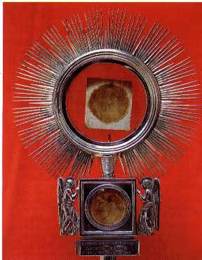
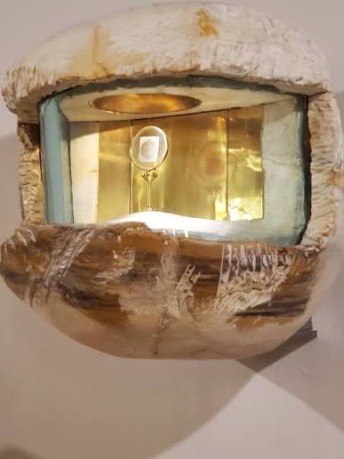
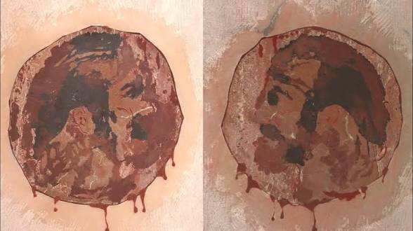

The 1330 Eucharistic miracle of Cascia occurred when a priest carelessly placed a consecrated Host into his prayer book instead of a proper container. Upon opening the book at the sick man’s home, he was astonished to find the Host bleeding, leaving round, living blood stains on the pages.
Location: One of the original bloodstained pages is safely preserved inside a reliquary at the Basilica of St. Rita in Cascia, Italy.
Visual Markings: Many of the faithful over the centuries have observed that the enlarged bloodstains on the pages appear to form the outline of a suffering human face.
Veneration: The miracle is annually commemorated during the Feast of Corpus Christi, continuing a tradition mandated by the Communal Statutes of Cascia as early as 1387.